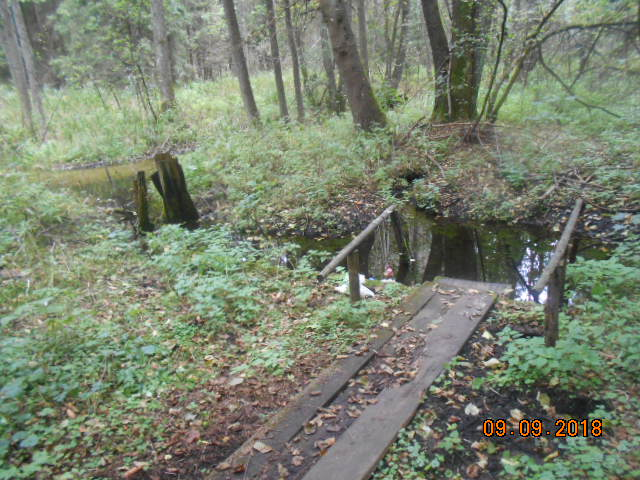

Хатки-1
22.08.2018
Брестская область > Барановичский район > д. Детковичи > Хатки-1

Родник не благоустроен. Представляет собой небольшое озерцо. Ранее в боковом выходе воды (из-под корней деревьев) торчала труба, которая из-за постоянного засорения была убрана. К роднику уложен настил и установлены поручни.
Местные считают родник целебным.
Родниковый ручей вытекает из озерца и попадает в р. Детковку (так называется р. Лохозва в верхнем течении, до впадения в нее р. Жеребиловки).
Местоположение
Координаты: 53.1021012, 25.6919259